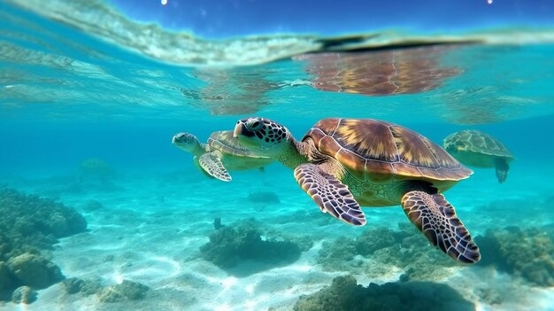

01. Un sitio con propósito claro
Cada sección está pensada para mover a la acción, desde entender el ecosistema hasta comprometerse con un cambio concreto.

Conoce, Comprende y actúa por la vida marina
Conoce el problemaCada sección está pensada para mover a la acción, desde entender el ecosistema hasta comprometerse con un cambio concreto.
Geografía, importancia económica y social del mar Caribe colombiano para sus comunidades costeras.
Explorar →Especies, ecosistemas clave y los factores humanos y climáticos que los están degradando.
Explorar →Un plan de acción ciudadano y un asistente que orienta según tus intereses.
Explorar →El deterioro del mar Caribe colombiano no puede entenderse sin el cambio climático.
El aumento de la temperatura del mar, la contaminación por plásticos y la sobrepesca amenazan directamente los arrecifes, manglares y pastos marinos del Caribe colombiano, base de la seguridad alimentaria de miles de familias costeras.
El calentamiento del mar Caribe impulsa el blanqueamiento coralino y la erosión costera, mientras el aumento del nivel del mar pone en riesgo poblados como Cartagena, Santa Marta y el archipiélago de San Andrés y Providencia.